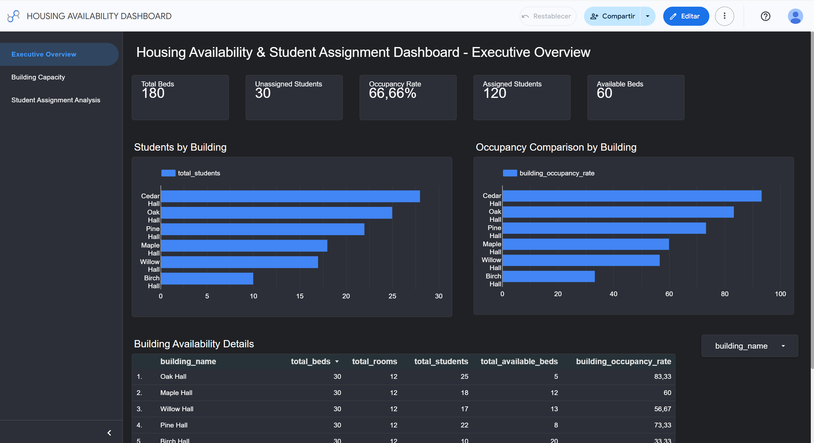

Live dashboard ↗Data engineering2026
Housing availability analytics
A reproducible GCP pipeline that turns four source files into tested BigQuery marts and a working Looker Studio report.
- 13-task Airflow DAG
- 10 dbt models
- 61 schema and business-rule tests
- 4 analytics-ready marts
GCP / BigQuery / Airflow / dbt / Terraform / Docker
Explore the repository